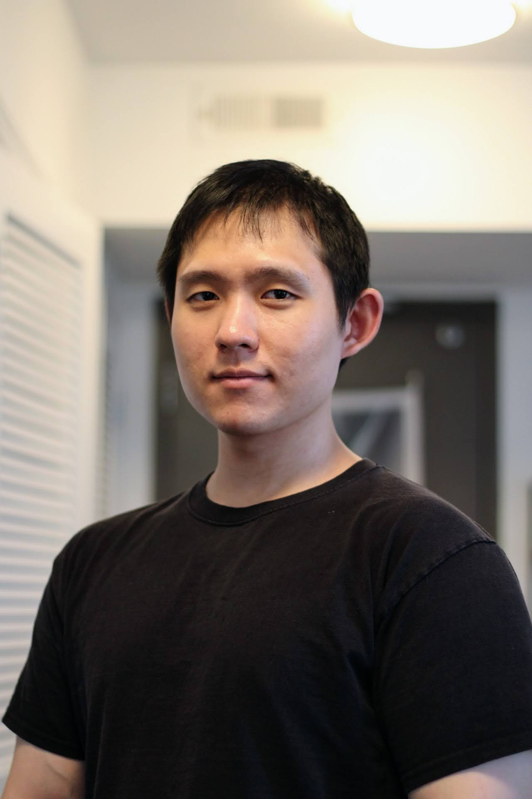

About
I'm a 5th year CS PhD student at Georgia Tech and working with Ada Gavrilovska.
I'm also co-advised with Alexey Tumanov.
My academic trajectory was initially started after my early career of pro gamer, igniting my interest in the intersection of computer science and video game design/development.
They significantly shapes my current research pursuits.
My research interest has been about edge/cloud computing for real-time and interactive multimedia
applications, XR. I have been working on the research projects, developing technologies to enable streaming high-quality
XR experiences and building scalable systems for adaptively serving perception and 3D rendering workloads.
Resume *updated Jul, 2024

Publication & Presentation
- FleXR: A System Enabling Flexibly Distributed Extended Reality, Jin Heo, Ketan Bhardwaj, Ada Gavrilovska, The 14th ACM Multimedia Systems Conference (MMSys '23) -- [paper] [project repo]
- FLiCR: A Fast and Lightweight LiDAR Point Cloud Compression Based on Lossy RI, Jin Heo, Christopher Phillips, Ada Gavrilovska, The Seventh ACM/IEEE Symposium on Edge Computing (SEC '22) [paper] [arixv] [project repo]
- Poster: Making Edge-assisted LiDAR Perceptions Robust to Lossy Point Cloud Compression, Jin Heo, Gregorie Phillips, Per-Erik Brodin, Ada Gavrilovska, The Seventh ACM/IEEE Symposium on Edge Computing (SEC '22) [paper]
- Poster: Enabling Flexible Edge-assisted XR, Jin Heo, Ketan Bhardwaj, Ada Gavrilovska, The Sixth ACM/IEEE Symposium on Edge Computing (SEC '21) -- Best Poster Award [paper]
- Acceleration Framework for FPGA Implementation of OpenVX Graph Pipelines, Sajjad Taheri, Jin Heo, Payman Behnam, Jeffrey Chen, Alexander Veidenbaum, Alexandru Nicolau, Field-Programmable Custom Computing Machines (FCCM), 2018 IEEE 26th Annual International Symposium on. IEEE, 2018 [paper], [open version]
Experience
- Graduate Research Intern - Dolby Laboratories, San Francisco, CA, USA, May 2024 - Aug 2024
- Graduate Research Intern - AT&T Labs, Austin, TX, USA, May 2023 - Aug 2023
- Graduate Research Intern - Ericsson Research, Santa Clara, CA, USA, Mar 2021 - Dec 2022
- Research Scholar - Semiconductor Research Corporation (SRC) Research Scholars Program, Jan 2020 - Aug 2022
- Graduate Research Assistant, Georgia Tech, Atlanta, GA, USA, Aug 2019 - Present
- Undergraduate Research Assistant (UROP) - UC Irvine, Jul 2017 - Jan 2018
- Undergraduate Research Assistant (UROP) - Ajou University, Mar 2017 - Jul 2017
- Undergraduate Research Assistant (UROP) - Commonwealth Scientific and Industrial Research Organisation (CSIRO), Sep 2016 - Feb 2017
- IT Specialist - Republic of Korea Army, Busan Hospital, South Korea, Aug 2011 - Nov 2013
Education
- Georgia Tech, Ph.D., Computer Science, Aug 2019 - Present
- Ajou University, B.S., Computer Software and Engineering, Mar 2016 - Aug 2018
- National Institute for Lifelong Education, A.S., Information Processing, Mar 2015 - Feb 2016
- Chungkang College of Cultural Industries, Attened for freshmen, Computer Games and Programming Skills, Mar 2011 - Feb 2015